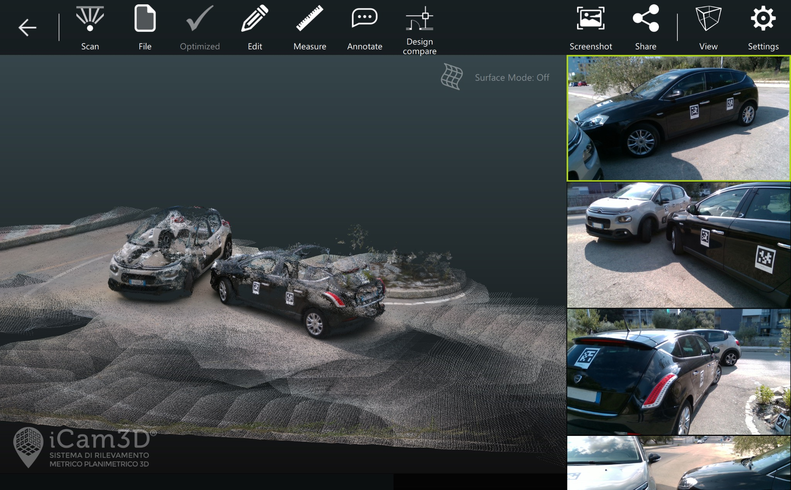

Studio Ante & C.
Perizie Assicurative e Consulenze Tecniche a Taranto
Home
Servizi
Chi siamo
Contatti
Servizi Principali
Perizie danni auto
Valutazione tecnica di veicoli danneggiati per sinistri stradali a fini assicurativi.
Consulenze CTP
Assistenza tecnica in contenziosi civili e sinistri come Consulente di Parte.
Incarichi CTU
Consulenze peritali su incarico del Tribunale di Taranto e provincia.

Ricostruzione sinistri
Analisi dinamica degli incidenti con software specialistici e modelli fisici.
Stime e inventari
Valutazioni patrimoniali dettagliate per successioni, divisioni e assicurazioni.
Valutazioni pre-acquisto
Controlli tecnici su immobili e auto usate prima dell'acquisto per evitare sorprese.